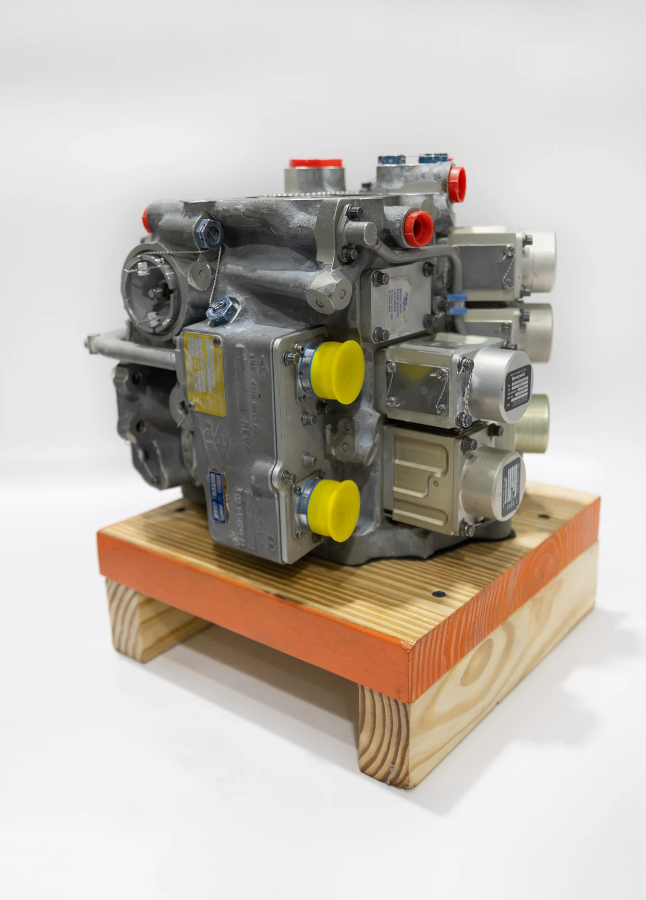
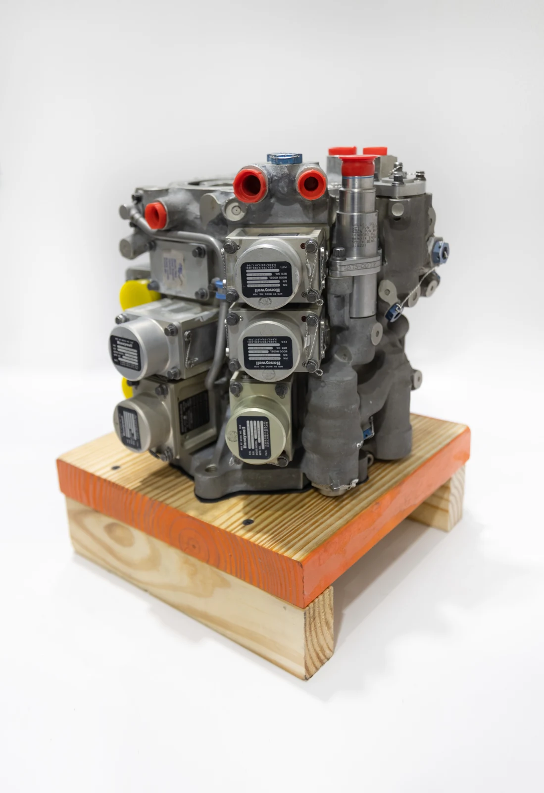
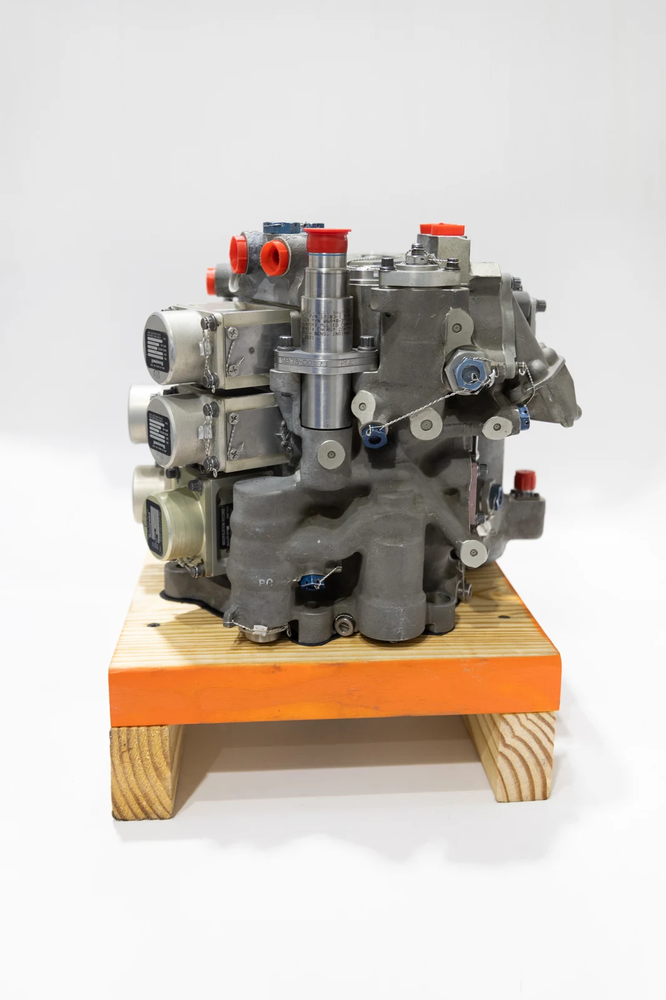
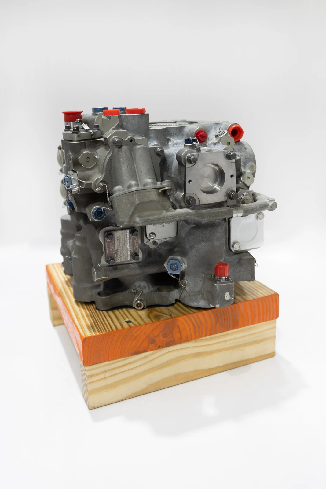
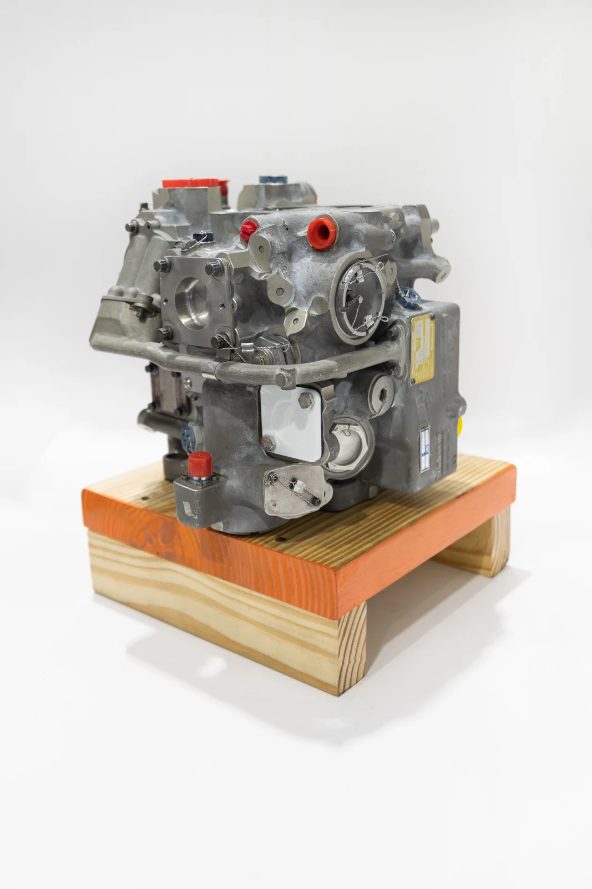

Every part number.
A history that matters.
Most shops can tell you where your unit sits in their process. That’s job status. We track how the component behaved once it went back on the aircraft.
Aircraft fuel, HMU and hydraulic
component repair & overhaul.
Fuel expertise. Hydraulic capability. Dedicated test stands.
Reliability tracked on every part number.
Explore unit 441789 through six real photographic views. Drag to change the view, or zoom in to inspect the details.
Ask about this unit ↗





Actual unit photography · Drag between views; zoom for detail.
Known for HMUs. Equipped for hydraulics. Our specialist accessory shop brings focused expertise to every component we support.
Hydromechanical units, pumps, fuel controls, nozzles, valves and actuators.
Specialist repair and test capability, supported by in-house hydraulic test equipment.
Pumps, fuel controls and flow dividers. Tested on dedicated APU stands.
Boost pumps, valves and controllers for Boeing and Airbus airframes.
Most shops can tell you where your unit sits in their process. That’s job status. We track how the component behaved once it went back on the aircraft.
Every unit is disassembled, cleaned, inspected, assembled and tested on our own stands in Doral. No subcontractor’s queue inside your turn time.
The stand your component goes on was bought for that component, not adapted to it. Dedicated equipment. Consistent hands. One standard.

Every unit tested on our own stands. All inside a 25,000 square foot facility built for the tolerances this work runs to.
Inside our facility ↗Reliability data you can plan with.
Components that stay on wing.
Accessories you can’t afford to see come back.
A turn time we control.
Documentation that travels with the asset.
Ready for the next inspection.
Tell us the part number, the quantity and when you need it back.
Request a quote ↗